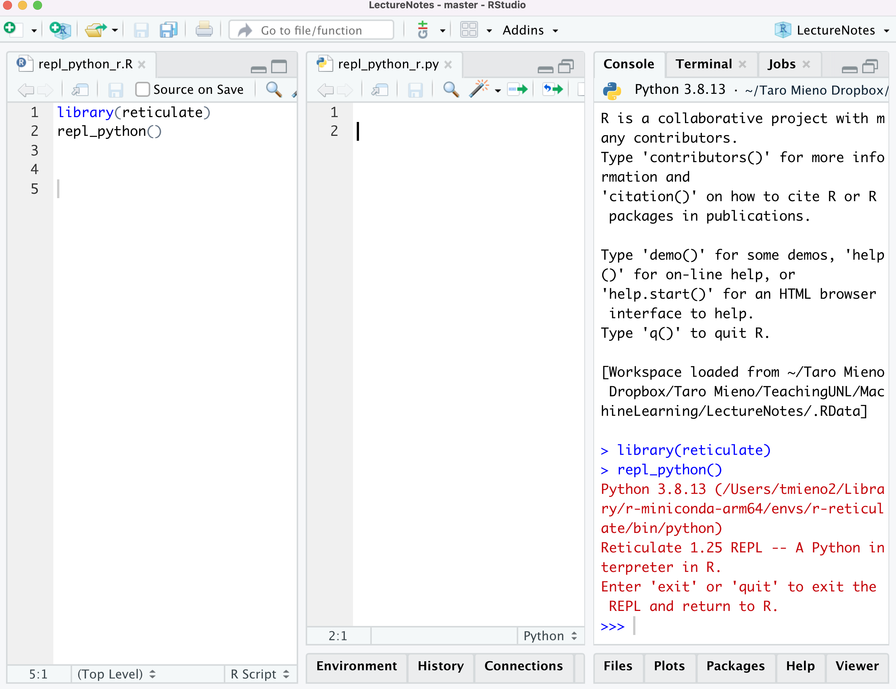
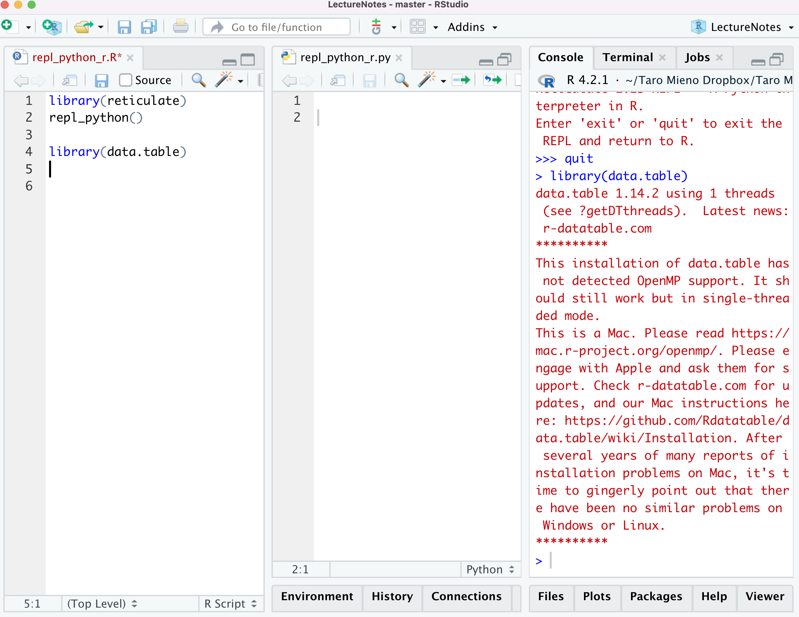
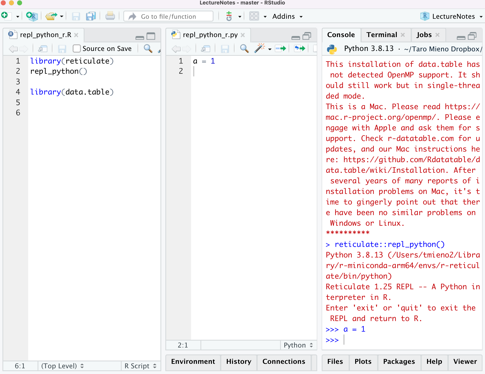
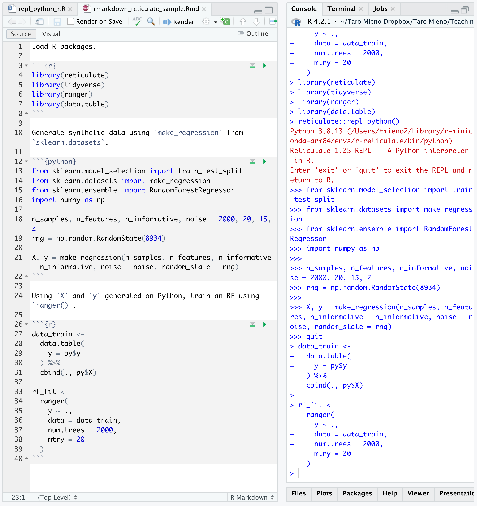

from sklearn.model_selection import train_test_split
from sklearn.datasets import make_regression
from sklearn.ensemble import RandomForestRegressor
import numpy as np
#=== set parameters for data generation ===#
n_samples, n_features, n_informative, noise = 2000, 20, 15, 2
rng = np.random.RandomState(8934)
#=== generate synthetic data ===#
X, y = make_regression(
n_samples,
n_features,
n_informative = n_informative,
noise = noise,
random_state = rng
)
#=== split to test and train data ===#
X_train, X_test, y_train, y_test = train_test_split(
X, y, random_state = rng
)
#=== set up an RF ===#
reg_rf = RandomForestRegressor(max_features = "sqrt")
#=== train an RF on the train data ===#
reg_rf.fit(X_train, y_train)
#=== test the fit ===#
reg_rf.score(X_test, y_test)11 Running Python from R
In this chapter, we learn how to run Python codes from within R using the reticulate package. We will run mainly the following python codes in different ways on R.
Packages to load for replications
library(data.table)
library(tidyverse)library(reticulate)11.1 R and Python REPL simultaneously
RPEL stands for read-evaluate-print-loop.
Within your R session, you can start a Python session that is embedded in it by running repl_python() from R. This will allow you to go back and forth between R and Python. Objects created in Python can be accessed from R using the py object as described above. This provides an ideal environment where you can test the interactions of your R and Python codes in a seamless manner.
You initiate a Python environment using repl_python(). If you are using RStudio, this is what it looks like.
repl_python()
As you can see on the console tab, a python session has been initiated, which is connected your R session. As long as you are using RStudio, you do not have to worry about switching between R and Python manually. RStudio is smart enough to know where the codes are coming from and execute codes where they should be executed. That is, if you run codes from a python (R) file, they will be sent to the python (R) console.
Picture below shows what the console looks like after I executed library(data.table) while I am still on the python console. You can see >>> quit (exit from python) before library(data.table) was executed on R.

Let’s now define an object called a in python.

Tip
From R, you can access objects defined on Python by using py$ prefix to the object name on python. This is like you are accessing an element of a list on R. py has a list of objects defined on Python.
Let’s now confirm this by accessing a on R.

Great. This seamless integration is really nice especially when you are writing an R-centric program that include pythons codes and are tying to debug.
11.2 Importing Python modules
You can import Python modules and use them as if they are R functions. This way of interacting with Python involves the least direct interactions with Python among all the options that the reticulate package provides us with.
You can import a python module using import() like below, which imports the Python os package.
(
os <- import("os")
)Module(os)The imported module is assigned to os on R. You can access functions in a module using $ instead of . as done in Python.
For example, the following code use listdir() from the os module.
os$listdir(".") %>% head()[1] "B03-cross-validation_files"
[2] "C01-dml.qmd"
[3] ".Rhistory"
[4] "P03-xgb.html"
[5] "L00-prediction-vs-causal-inference.html"
[6] "P01-random-forest.html" Let’s rewrite the above sample Python code using this method. First, we import all the modules (not the functions) we need.
sk_ds <- import("sklearn.datasets")
sk_ms <- import("sklearn.model_selection")
sk_ensemble <- import("sklearn.ensemble")
np <- import("numpy")If you try this, you will get a complaint.
make_regression <- import("sklearn.datasets.make_regression")Error in py_module_import(module, convert = convert): ModuleNotFoundError: No module named 'sklearn.datasets.make_regression'Now, let’s define parameters used in make_regression().
n_samples <- as.integer(2000)
n_features <- as.integer(20)
n_informative <- as.integer(15)
noise <- 2
rng <- np$random$RandomState(as.integer(123))Note that the values of n_sample, n_features, and n_informative are made integers explicitly. This is because Python accepts only integers for those parameters (see here). noise is a float and you can be loose about what type of numeric value you provide.
Now, in the Python code below, make_regression create a tuple (like a list on R) of tuple of length 2: the first one is an array of 2000 by 20 (assigned to X) and the second one is an array of 2000 by 1 (assigned to y). Python has a convenient way of assigning the elements of a tuple to new objects as shown below.
X, y = make_regression(
n_samples,
n_features,
n_informative = n_informative,
noise = noise,
random_state = rng
)R is a bit clumsy on this. So, we can just assign the list of arrays into a single object as a list like below and then extract its elements separately later.
synth_data <-
sk_ds$make_regression(
n_samples,
n_features,
n_informative = n_informative,
noise = noise,
random_state = rng
)Here is the structure of the data created.
str(synth_data)List of 2
$ : num [1:2000, 1:20] 1.465 -0.8946 1.1291 -0.0123 -0.124 ...
$ : num [1:2000(1d)] 168.3 -95.3 163 31.4 -112.7 ...We can then generate \(X\) and \(y\) like below.
X <- synth_data[[1]]
y <- synth_data[[2]]We now split the dataset into the train and test datasets using train_test_split().
train_test_ls <- sk_ms$train_test_split(X, y, random_state = rng)Assign each element of train_test_ls to R objects with appropriate names.
X_train <- train_test_ls[[1]]
X_test <- train_test_ls[[2]]
y_train <- train_test_ls[[3]]
y_test <- train_test_ls[[4]]Then, train RF on the train data, and then test the fit.
#=== set up an RF ===#
reg_rf <- sk_ensemble$RandomForestRegressor(max_features = "sqrt")
#=== train an RF on the train data ===#
reg_rf$fit(X_train, y_train)RandomForestRegressor(max_features='sqrt')#=== test the fit ===#
reg_rf$score(X_test, y_test)[1] 0.703322211.3 Sourcing Python scripts
Another way to run Python codes from R is to source a python script to make python functions and modules available.
Here is the Python code in the file called import_modules.py.
# | eval: false
from sklearn.model_selection import train_test_split
from sklearn.datasets import make_regression
from sklearn.ensemble import RandomForestRegressor
import numpyYou can source this file using source_python().
source_python("import_modules.py")import_modules.py is included in the github repository.
The first three lines are importing functions (train_test_split, make_regression, and RandomForestRegressor), while the last line is importing a module (numpy). When functions are imported in this manner, they can be used without py$ as if they are R functions.
synth_data <-
make_regression(
n_samples,
n_features,
n_informative = n_informative,
noise = noise,
random_state = rng
)
length(synth_data)[1] 2However, a module cannot be used without py$. So, you cannot do this.
numpy$random$RandomState(as.integer(123))Error in eval(expr, envir, enclos): object 'numpy' not foundRather, you need to do this:
py$numpy$random$RandomState(as.integer(123))RandomState(MT19937) at 0x2A508A440You can source user-defined functions on Python as well. Here is the python code in the file called make_data.py. train_test_RF() takes some of the arguments for make_regression() as its arguments, split the data, train RF on the train data, evaluate the fit, and then return the test score.
def train_test_RF(n_samples, n_features, n_informative, noise, rng):
from sklearn.model_selection import train_test_split
from sklearn.datasets import make_regression
from sklearn.ensemble import RandomForestRegressor
import numpy as np
X, y = make_regression(
n_samples,
n_features,
n_informative = n_informative,
noise = noise,
random_state = rng
)
X_train, X_test, y_train, y_test = train_test_split(
X, y, random_state = rng
)
reg_rf = RandomForestRegressor(max_features = "sqrt")
reg_rf.fit(X_train, y_train)
test_score = reg_rf.score(X_test, y_test)
return test_scoreSourcing this file using source_python(),
source_python("run_rf.py")Once this is done, train_test_RF() is now available to use on R.
train_test_RF(
n_samples,
n_features,
n_informative = n_informative,
noise = noise,
rng = rng
)[1] 0.695173411.4 Python in Rmarkdown or Quarto
Using R and Python in an Rmarkdown or Quarto file is extremely easy. You can have both R and Python codes in the same Rmd file. When you write R (python) codes, you use R (python) code chunks indicated by {R} ({python}) like below.

First code chunk is an R code chunk and loads libraries including reticulate.
Tip
If you do not load the reticulate package, python code chunks still run, but the objects defined on python would not be available on R.
The second code chunk is a python code chunk and generate synthetic data using make_regression from sklearn.datasets.
The third code chunk is an R code chunk. It uses X and y generated on Python to train an RF using ranger().